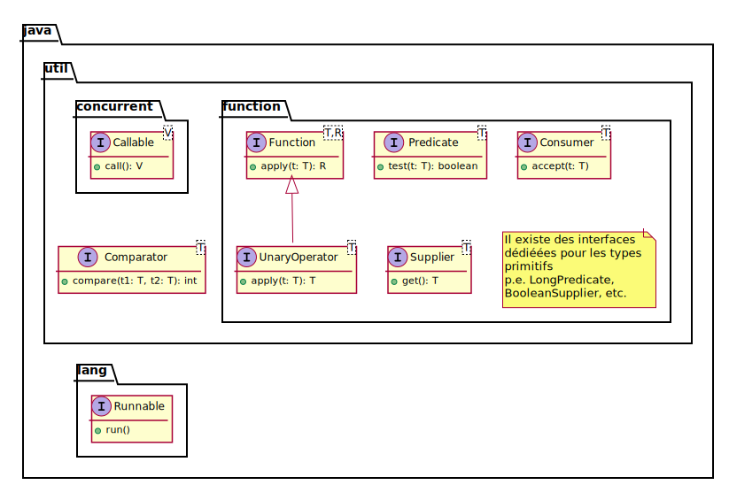
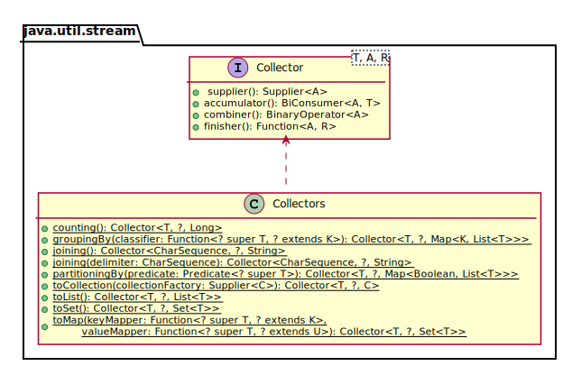
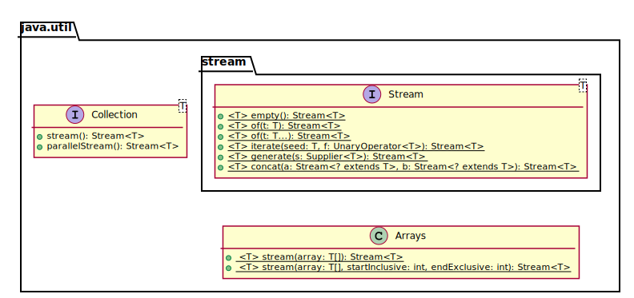
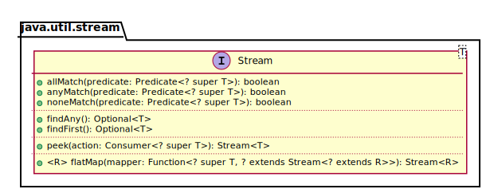
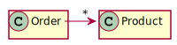
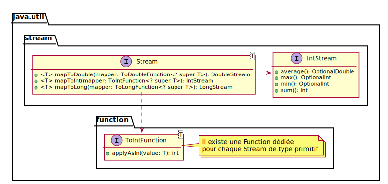
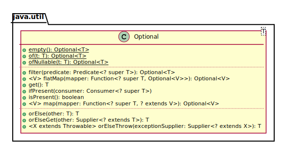

@FunctionalInterface
public interface Comparator<T> {
int compare(T o1, T o2);
}Streams
Lambda
Simplifie l’écriture des classes internes anonymes
Java 8+
Interface fonctionnelle
Interface qui comporte une méthode unique
Hors
private,defaultetstatic
De préférence annotée
@FunctionalInterface
Interface fonctionnelle
La méthode (donc l’interface) peut être assimilée à une fonction
Fonction

Interfaces fonctionnelles

Exemple de définition
Exemple d’utilisation
Comparator<String> c1 = new Comparator<String>() {
@Override
public int compare(String s1, String s2) {
return s1.compareToIgnoreCase(s2);
}
};
Comparator<String> c2 = (String s1, String s2) -> {
return s1.compareToIgnoreCase(s2);
};Simplification 1
Le type peut être omis
Comparator<String> c = (s1, s2) -> {
return s1.compareToIgnoreCase(s2);
};Simplification 2
Si le bloc est une simple expression :
Suppression du bloc
Omission du mot-clé
returnOmission du
;final
Comparator<String> c = (s1, s2) -> s1.compareToIgnoreCase(s2);Simplification 3 : Référence de méthode
Quand une expression appelle une méthode existante :
Forme abrégée
<Type>+::+<méthode>
Comparator<String> c = String::compareToIgnoreCase;Simplification 4
Si il n’y a qu’un unique argument :
Suppression des parenthèses
Function<Integer,Integer> f = i -> i + 1;Cas d’utilisation de streams
Soit une liste de
PersonCalculer la moyenne de l’âge des personnes
Implémentation basique
List<Person> persons = ...
double sum = 0.0;
for (Person person: persons) {
sum += person.getAge();
}
double average = sum / persons.size();Problème
Beaucoup de boilerplate code
Focus sur le comment, pas sur le quoi
A l’inverse du tri,
sort()
Autres cas d’utilisation
Capitaliser les noms de famille
Conserver uniquement les adultes
Combinaison de cas d’utilisation
etc.
Stream
Un stream est un pipeline de fonctions.
Stream en Java 8
Stream de départ
Opérations intermédiaires → *
Opérations terminales → 1
Peut-être infini
Opération intermédiaire
Retourne un stream
Lazily executed (à la demande)
Opération terminale
Retourne un type concret
Ou produit des effets de bord
Eagerly executed (lors de l’appel)
Démarre le pipeline
Opérations intermédiaires
map()filter()limit()skip()distinct()sorted()
Map
Transforme un stream de types T en un autre stream de types R
Via une instance de
Function<T, R>
persons
.stream()
.map(new Function<Person,String>() {
@Override
public String apply(Person person) {
return person.getFirstName();
}
})
.map(new Function<String,String>() {
@Override
public String apply(String name) {
return name.toUpperCase();
}
});Utilisation de lambdas
persons
.stream()
.map(person -> person.getFirstName())
.map(name -> name.toUpperCase());Utilisation de références
persons
.stream()
.map(Person::getFirstName)
.map(String::toUpperCase);Filter
Transforme un stream de taille x en un autre stream de taille y < x
Via une instance de
Predicate
persons
.stream()
.filter(person -> person.getAge() >= 18);Limit
Transforme un stream de taille x en un autre stream de taille y < x
En conservant les n premiers éléments
persons
.stream()
.limit(15);Skip
Transforme un stream de taille x en un autre stream de taille y < x
En omettant les n premiers éléments
persons
.stream()
.skip(15);Distinct
Transforme un stream de taille x en un autre stream de taille y < x
En omettant les doublons
persons
.stream()
.distinct();Sorted
Transforme un stream d’éléments en un stream d’éléments ordonnés
Via une instance de
Comparator<T>Ou selon l’ordre naturel des éléments
persons
.stream()
.sorted((p1, p2) -> p1.getAge() - p2.getAge());
persons
.stream()
.sorted(Comparator.comparingInt(Person::getAge));Opérations finales
collect()forEach()reduce()
Collect
Regroupe les éléments d’un stream dans une collection concrète
Via une instance de
Collector<T, A, R>
Collector

stream.collect(Collectors.toList());
stream.collect(Collectors.toSet());
stream.collect(Collectors.toMap(
person -> person.getId(),
person -> person));
stream.collect(Collectors.toMap(
Person::getId,
Function.identity()));For each
Invoque des effets de bord sur les éléments d’un stream
Via une instance de
Consumer<T>
stream.forEach(person -> {
System.out.println(person);
});
stream.forEach(System.out::println);Reduce
Aggrège les éléments d’un stream dans un élément unique
Via une instance de
BinaryOperator<T>
stream.mapToInt(Person::getAge).average();Création de streams
Depuis une collection existante
Depuis un tableau existant
Depuis des éléments
Depuis une fonction

Depuis une collection existante
List<Person> persons = ...
Stream<Person> stream = persons.stream();Depuis un tableau existant
Person[] persons = ...
Stream<Person> stream = Arrays.stream(persons);Depuis des éléments
Stream<String> stream = Stream.of("one", "two", "three");Depuis une fonction
Stream<String> stream = Stream.generate(() -> "X");
Stream<Integer> stream = Stream.iterate(0, i -> i + 1);Fonctionnalités supplémentaires

Match
- all
Tous les éléments du stream vérifient le prédicat
- none
Aucun élément du stream ne vérifie le prédicat
- any
Au moins 1 élément du stream vérifie le prédicat
Find
- any
Renvoie un élément quelconque du stream
- first
Renvoie le premier élément du stream (s’il est ordonné)
Peek
Permet d’accéder aux élément du stream sans le modifier
Exemple : log l’élément
Flat map
Assemble les éléments de n collections dans un stream unique
Exemple

Comment récupérer tous les produits commandés ?
Stream<List<Product>> streamOfList = orders
.stream()
.map(Order::getProducts);
Stream<Product> streamOfProducts = orders
.stream()
.flatMap(order -> order.getProducts().stream());Divers
Stream de types primitifs
IntStreamDoubleStreamLongStream
Spécificités

Optional

Order order = repository.load(1L);
if (order != null) {
// Do something with person
}
Optional<Order> optional = repository.load(1L);
optional.ifPresent(order -> {
// Do something with person
});Order order = repository.load(1L);
if (order == null) {
order = new Order();
}
Optional<Order> optional = repository.load(1L);
Order order = optional.getOrElse(new Order());